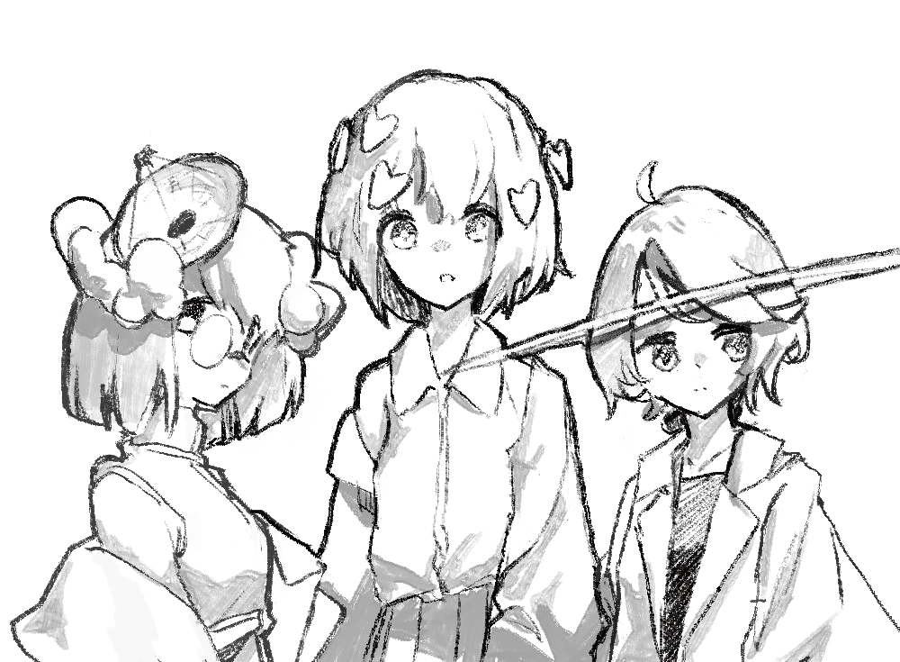
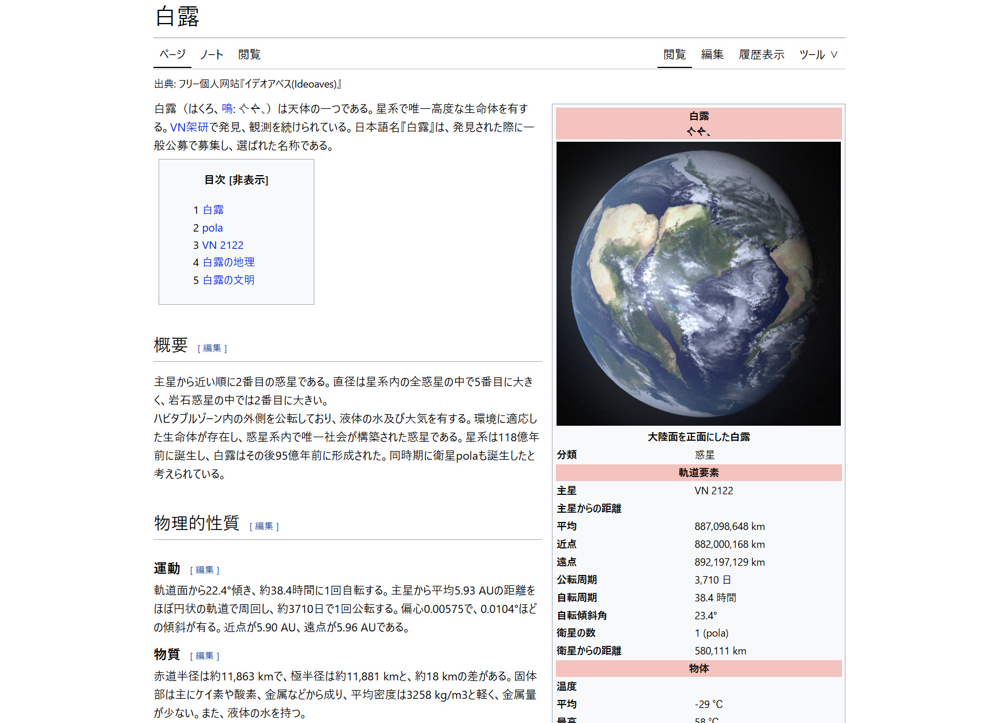

𝐼𝑑𝑒𝑜𝑎𝑣𝑒𝑠 ( 𝑡ℎ𝑒𝑦 )
Ideoavesイデオアベスと読みます。もともとみなさんが鳥類𝑎𝑣𝑒𝑠だったのですが、木葉はづく以外は生命を辞めてしまいました。
のホームページ
このウェブサイトは5-6年間の継ぎ足しで改変されてきました。
20年頃、JSでランダムな数値を出してカウンターと称していた個人サイトから始まり、現在はコレクティブのワークスをまとめるサイトになっています。
今もなお気分次第で工事中です。
へようこそ。
Ideoavesは、映像作家の木葉はづく、絵描きの折メ思案、
その他の表現試作趣味では写真撮影、空想地図や架空言語などをしています。𝙸𝚍𝚎𝚘𝚊𝚟𝚎𝚜ではディレクションの補佐的な位置にいます。
をするph環yimiruなどからなる
バーチャル・コレクティブIdeoavesについて｜Note
です。特に誰か定まっていない制作は📡Discordやコミュニティでお目にかかるかもしれませんが、好きに呼んでください。アカウントは共用です。 を名乗っています。
していることキーワードをいくつか挙げてみました。広く浅く色々遊んでいます。
映像 、
3DCG
、
3DCG 、ジェネラティブアート
、ジェネラティブアート 、デザイン
、デザイン 、イラスト
、イラスト 、音楽、DJ
、音楽、DJ 、写真
、写真 、Web、架空世界創作
、Web、架空世界創作
、天文、地質、ファッション、 他のことをしてみたいのです。 contentで置き換えるとバタバタするんですね、かわいいですね。共同で制作された作品はworksに乗っています。
個々人の作品はそれぞれの名前からアカウントに飛ぶことが出来ます。
link
banner自由にリンクしてください。

<a href="https://ideoaves.github.io"><img
src="https://ideoaves.github.io/banner.png"></a>
コピーしました。元画像は200x40のサイズになっています。適宜調整してください。
link